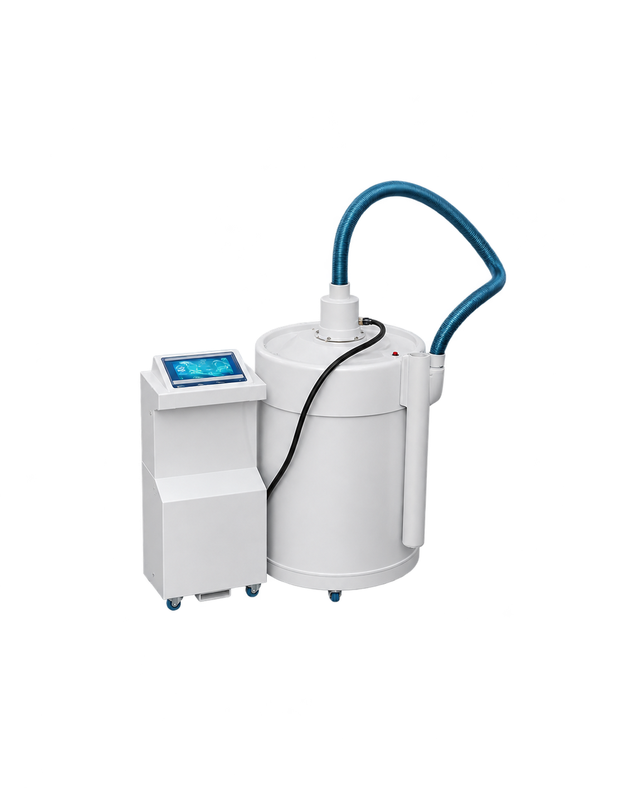

Локальная криотерапия и аппаратный криомассаж

Стоимость по прайсу
- Локальная криотерапия одного сустава, криомассаж лица, криомассаж волосистой части головы — 7 мин, 2 000 ₽
- Криомассаж лица и шеи, 10 мин — 3 700 ₽
- Криомассаж лица, шеи и декольте, 20 мин — 4 100 ₽
Суть метода
Криофен направляет на выбранный участок поток смеси азота и воздуха температурой до −130 °C. При локальной криотерапии холод используют, чтобы уменьшить боль и отёк, например в области сустава или после травмы. При аппаратном криомассаже специалист работает с кожей лица, шеи, декольте или волосистой части головы.
Для чего применяется
Локальная криотерапия. Направленное охлаждение используют как вспомогательный метод для уменьшения боли и местного отёка, в том числе при восстановлении после нагрузки или травмы. Врач заранее определяет, подходит ли вам процедура и какую область нужно обработать.
Аппаратный криомассаж лица. Это процедура ухода за кожей, которую применяют для работы с её тонусом, упругостью и отёчностью. Краткое охлаждение вызывает временную реакцию сосудов и меняет кровоток в коже.
Криопилинг — косметологическая методика, при которой холодом воздействуют на поверхностный слой кожи, чтобы вызвать его отшелушивание. Формат и допустимость процедуры определяет специалист после осмотра.
Криомассаж кожи головы. Трихологи применяют местное охлаждение на отдельных участках волосистой части головы. Один из изученных вариантов — поверхностная криотерапия при очаговой алопеции (выпадении волос отдельными участками).
Работа с рельефом кожи тела. Веерная насадка распределяет поток по более широкой зоне. Такой формат применяют в косметологии для обработки участков с целлюлитом (неровным рельефом кожи).
Как проходит сеанс
Вы располагаетесь на кушетке. Специалист направляет на выбранный участок тела поток распылённого азота. Температура смеси на выходе из насадки может достигать −130 °C. Режим воздействия подбирают с учётом зоны и цели процедуры. Сеанс на одну зону длится 7–10 минут. Для аппаратного криомассажа в прайсе предусмотрено четыре варианта: лицо, лицо и шея, лицо, шея и декольте, а также волосистая часть головы.
Подготовка
Перед криомассажем лица снимите макияж и очистите кожу от крема и других косметических средств. Снимите украшения в зоне обработки. Для криомассажа кожи головы волосы и кожа головы должны быть полностью сухими. Если вы идёте на сеанс после душа, бани, бассейна или спа, заранее высушите волосы.
Показания
Локальная криотерапия. Боль и местный отёк при восстановлении после нагрузки или травмы. Врач определяет, подходит ли холодовое воздействие и какую зону нужно обработать.
Аппаратный криомассаж лица. Процедуру рассматривают при следующих состояниях и задачах ухода:
- снижение тонуса кожи, мелкие и средние мимические морщины и птоз (опущение мягких тканей лица);
- повышенную жирность кожи и акне (угревую сыпь);
- купероз (видимые расширенные сосуды) и розацеа (хроническое заболевание кожи, при котором может сохраняться покраснение);
- восстановление после пластических операций и косметологических процедур. Возможность и сроки холодового воздействия определяет лечащий врач с учётом заживления кожи.
Криомассаж кожи головы. Если вас беспокоит выпадение волос, шелушение или раздражение кожи головы, специалист сначала определит причину и подберёт подходящий метод.
Противопоказания
Несмотря на физиологичность и безопасность метода, криотерапия имеет ряд ограничений. Перед началом курса обязательна консультация специалиста для исключения состояний, несовместимых с воздействием сверхнизких температур.
Абсолютные противопоказания
- Холодовая аллергия (холодовая крапивница): индивидуальная гиперчувствительность к низким температурам, проявляющаяся отеком и высыпаниями.
- Эпилепсия и судорожные состояния: резкое температурное воздействие при аппаратной криотерапии может спровоцировать нежелательную активность центральной нервной системы.
- Гипертония тяжелой стадии (III стадия): риск рефлекторного повышения артериального давления в ответ на спазм периферических сосудов.
- Острые инфекционные заболевания: состояния, сопровождающиеся повышенной температурой тела и общей интоксикацией.
- Нарушение целостности кожного покрова: гнойничковые поражения, открытые раны или активная герпетическая инфекция в зоне обработки.
- Тяжелые заболевания сердечно-сосудистой системы: включая недавно перенесенный инфаркт миокарда или инсульт.